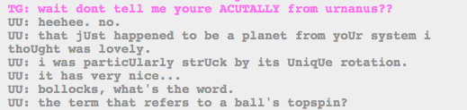

!!!!!!!
Okay, I double checked and “english” means side-spin, but I couldn’t find anything meaning top spin, other than like…topspin and top and follow. There’s no Lord Follow, as far as I know. HOWEVER with all the billiards imagery, I know this is important.